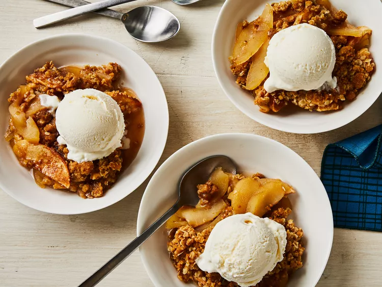

Apple Crisp

Declicious Apple Crisp
Ingredients
- 10 cups all-purpose apples, peeled, cored and sliced
- 1 cup white sugar
- 1 tablespoon all-purpose flour
- 1 teaspoon ground cinnamon
- 3 tablespoons water
- 1 cup quick-cooking oats
- 1 cup all-purpose flour
- 1 cup packed brown sugar
- ¼ teaspoon baking powder
- ¼ teaspoon baking soda
- ½ cup butter, melted
Steps
- Gather all ingredients. Preheat the oven to 350 degrees F (175 degrees C).
- Place sliced apples in a 9x13-inch baking dish. Mix white sugar, 1 tablespoon flour, and cinnamon together; sprinkle over apples. Pour water evenly over apples.
- Combine oats, 1 cup flour, brown sugar, baking powder, and baking soda in a large bowl. Add melted butter and mix with a fork until crumbly; sprinkle evenly over apple mixture.
- Bake in the preheated oven until top is golden brown and apples are bubbling around the edges, about 45 minutes.
- Enjoy!